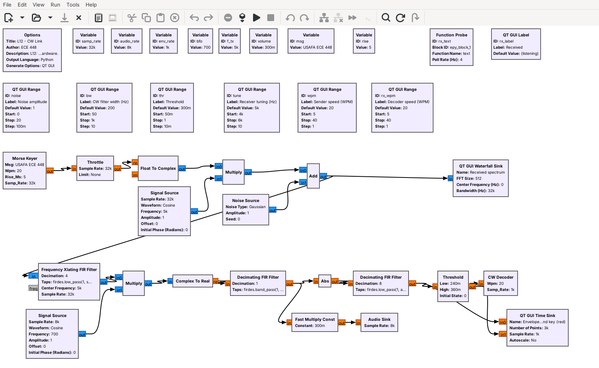

L12 Lab — CW#
CW
Key your initials by hand, find where noise, filter width, speed, and tuning stop the decoder, and send CW through a PlutoSDR.
L12 Lab · Module 6: Waveform Applications & RF Reverse Engineering · Dr. Neil Rogers
Learning Objectives
- I can transmit and receive CW (Morse) using GNU Radio and decode a received CW stream.
From Lesson to Bench
Pre-Lab: run the link, watch the noise, and work out the timing and windows.
Bench: build a keyer, sweep noise, speed, and tuning, then use a PlutoSDR.
Writeup: explain the threshold, the filter width, and the speed limits.
Lesson 12 keyed, received, and decoded CW in one flowgraph. Today you first build a keyer yourself from standard blocks and see its key clicks, then measure where the simulated link stops decoding, and then run the same link on a PlutoSDR. The lab packet has three parts, and you turn it in once, complete, before Lesson 13. Part 1, the Pre-Lab, is on your own before the period: run L12-cw-link.grc, watch what the noise slider does, and work out the timing and settings Part 2 uses. Part 2 is your own measurements in class. Part 3, the Writeup, explains them.
Questions 1 to 5 run on your laptop and transmit nothing. Question 6 transmits at 915 MHz, into a cable unless your instructor says otherwise, as the PlutoSDR frame below describes.
Part 1: Before the Period
L12-cw-link.grcruns and decodesUSAFA ECE 448.Find the timing at 13 WPM and write your initials as units.
Turn up the noise and watch the envelope and the text; find the decoder’s windows in ms.
Do the Pre-Lab before you arrive. Question 1 checks that the link flowgraph opens and runs on your laptop: if GRC reports an error, the L5 lesson page lists the install checks, and EI before the lab is the place to fix it.
Question 2 is the arithmetic and watching the bench builds on: the dit, dah, and gap lengths at 13 WPM; your initials in Morse code, written as one 0 or 1 per unit, which is the list you type into your keyer in Question 3; what you see on the envelope plot and in the Received label as you raise the noise slider; the decoder’s 2-unit and 5-unit boundaries in milliseconds at 20 WPM; and how far you can mistune the receiver before the tone leaves a 200 Hz filter.
Settings to Work Out
Setting |
From |
|---|---|
Timing at 13 WPM |
dit \(1.2/W\); dah and letter gap 3 dits; word gap 7 |
Decoder windows at 20 WPM |
2 units and 5 units of 60 ms |
Tuning room |
half the filter width |
These come straight from Lesson 12 and the block settings. Everything else you find by watching: how the envelope and the text change as noise rises, which sender speeds the decoder copies, and where the tone leaves the filter. The count of wrong characters at each noise setting is random and changes from run to run, which is why the packet records it over three repeats of the message.
Part 2: Build a Hand Keyer
Start GRC and choose File, New, QT GUI. Do not open
L12-cw-tx.grc; build the keyer yourself from standard blocks.Set
samp_rateto 8000. Add Variableswpm= 13 andspu=int(samp_rate*1.2/wpm), the samples in one unit.Add a Vector Source: type float, vector = your list of 0s and 1s from Question 2(b) in square brackets, repeat Yes.
Add a Repeat block: type float, interpolation
spu. It holds each unit for one unit’s worth of samples. Then add a Throttle: type float, sample ratesamp_rate. Its output is your hard-keyed envelope.Add a Moving Average: type float, length 40, scale
1/40. It averages the last 5 ms, which turns every edge into a 5 ms ramp. Connect the Throttle’s output to its input. Its output is your shaped envelope.Add a QT GUI Time Sink: type float, 2 inputs, 32000 points, sample rate
samp_rate. Connect the Throttle to input 0 and the Moving Average to input 1.Add a QT GUI Frequency Sink: type float, 2 inputs, FFT size 8192, bandwidth
samp_rate, Y min \(-140\), and Average left at None. Connect it the same way. Every arrow must be black.Run it. Screenshot the canvas for Question 3(a). Drag a box on the time sink to zoom in on one dit, measure its length, and screenshot it for Question 3(b). Right-click the frequency sink and choose Max Hold, wait a few seconds, and read the highest peak of each spectrum within 100 Hz of 1 kHz and of 2 kHz from 0 Hz, where a carrier would sit, for Question 3(c); the Moving Average has nulls exactly at multiples of 200 Hz.
Part 2: The Receiver in Noise

Open and run
L12-cw-link.grcwith every slider at its default. The Received label shows the last 60 characters, about four repeats ofUSAFA ECE 448.Set the noise amplitude to 4.5. On the envelope plot, read the level between marks (the space level) and the level during marks (the mark level). Set the threshold halfway between them.
Wait for three new repeats of the message, about 23 s, and count the wrong, missing, and extra characters in the Received label. Record the levels, the threshold, and the count for Question 4(a).
Repeat steps 2 and 3 at noise amplitudes of 5.5 and 6.5. Screenshot the window at 6.5 for Question 4(b).
At 6.5, set the CW filter width to 1000 Hz, set the threshold again from the envelope plot, and record the count. Then do the same at 50 Hz.
Part 2: Speed and Tuning
Set the noise amplitude back to 1, the CW filter to 200 Hz, and the threshold to 0.3.
Leave the Decoder speed at 20 WPM. Set the Sender speed to 10, 12, 13, 20, 27, 28, and 30 WPM in turn. At each, wait for one full repeat of the message and record for Question 5(a) whether it decodes correctly, and if not, what goes wrong.
Set the Sender speed back to 20. Turn up your laptop’s volume and listen to the tone.
Set the Receiver tuning to 5050, 5080, 5100, and 5150 Hz in turn. At each, record the pitch you hear, higher or lower than at 5000 Hz, and whether the text decodes, for Question 5(b).
If No Text Arrives
If the Received label stays at “(listening)” or shows only E and T
Close the flowgraph and run it again with the sliders at their defaults, where every repeat of the message should decode. If the key trace never rises, the threshold is above the mark level; if it chatters between marks, the threshold is too close to the space level. In your own keyer, check that the vector ends with seven 0s, so the pattern repeats with a word gap, and that the Repeat block’s interpolation is spu, not wpm.
Part 2: CW on a PlutoSDR

You cable one Pluto’s TX port to its RX port through a 30 dB attenuator, at 915 MHz.
Connect the cable before the flowgraph runs; use antennas only on your instructor’s word.
L12-cw-pluto.grc is the Lesson 12 link with the simulated channel replaced by a PlutoSDR. The transmit half raises the 32 kHz stream to 1.024 MS/s and sends the keyed carrier from the Pluto’s TX port at 915 MHz plus 5 kHz; the receive half takes it from the RX port, lowers it to 32 kHz, and runs the same receiver. The received level depends on the cable, the attenuator, and the gain, and it is far weaker than in the simulated link, so an AGC after the Xlating filter holds the tuned carrier near amplitude 1. The envelope’s mark level should then sit near 0.6 at any attenuation, and the envelope plot shows the threshold as a red line instead of the key. The waterfall’s color scale runs from \(-120\) to \(-40\) dB; if the carrier does not show, right-click the waterfall and choose Auto Scale. You type the message into the Message box. We have run this flowgraph only in simulation, with a model of the cable in place of the radio, so your bench is its first run on hardware.
In class we transmit only into a cable, into a shielded enclosure, or at very low power in an ISM band, and only when the lesson says to. This question transmits into the cable between the Pluto’s own TX and RX ports, through an inline 30 dB SMA attenuator. Or, if your instructor says so, it goes over the air at 915 MHz at low power, with an antenna on each port in place of the cable; the 30 dB floor on TX attenuation still holds. The TX attenuation slider opens at 60 dB and cannot go below 30 dB. Never set TX attenuation below 30 dB or change the slider’s range; the RX input is rated to only a few dBm, and the transmitter can put out more than that.
What Success Looks Like

The figure is the PlutoSDR flowgraph run in simulation, with the Pluto Sink and Source replaced by a model of the cable that uses our estimate of the Pluto’s levels: about \(-90\) dBm at the RX port and a carrier about \(-50\) dB below full scale at 40 dB gain, with receiver noise. The real levels can differ, but the AGC should give the same picture. On the bench, look for the same three things: the keyed carrier on the waterfall at +5 kHz, the red threshold line halfway between the envelope’s space and mark levels, and the message in the Received label.
PlutoSDR Steps
With the Pluto unplugged, connect its TX port to its RX port with a short SMA cable and an inline 30 dB SMA attenuator. Do not connect the cable without the attenuator, and connect antennas only if your instructor says to run over the air.
Plug the Pluto into USB and run
iio_info -sat the radioconda prompt; it should list a PlutoSDR context. The flowgraph uses the Pluto’s default address,ip:192.168.2.1.Open and run
L12-cw-pluto.grc. Find the keyed carrier on the waterfall at +5 kHz. On the envelope plot, read the space and mark levels and set the threshold halfway between them; the default of 0.3 should be close. If no marks appear, raise the RX gain a few dB at a time. Never set TX attenuation below 30 dB or change the slider’s range.Once
USAFA ECE 448decodes, screenshot the window for Question 6(a).Have a teammate type a short message of their own into the Message box, without telling you what it is, and press Enter. Decode it and record it for Question 6(b).
Set the TX attenuation to 60, 70, 80, and 89 dB in turn. At each, read the mark and space levels, set the threshold halfway again, and record both levels and whether the text decodes for Question 6(c). Stop the flowgraph and unplug the Pluto before you disconnect the cable.
Part 3: After the Lab
Describe what noise did to the envelope and text, and explain the threshold.
Compare the 50 Hz, 200 Hz, and 1 kHz filters, and the tuning each requires.
Explain which window failed at each speed, and propose a better decoder.
The Writeup is Question 7, in three parts. Part (a) describes what rising noise did to the envelope and the decoded text, and explains why the threshold had to move. Part (b) compares the three filter widths and connects your tuning measurement to the narrowest one. Part (c) uses the windows from Question 2(d) to say which one failed at each end of the speeds you tried, and proposes a change that would let the decoder follow any sender’s speed.
Lab Packet
L12-cw-link.grc: the whole CW link with sliders for the noise, filter, threshold, tuning, and both speeds. No hardware needed.
L12-cw-pluto.grc: the link on one PlutoSDR, transmitting at 915 MHz into a cable from its TX port to its RX port through a 30 dB attenuator. Needs a PlutoSDR.
Tutorials this lab follows:
GNU Radio wiki: Embedded Python Block, Frequency Shifting, Low Pass Filter Example, and Runtime Updating Variables.
PySDR: Filters and Noise and dB.
Looking Ahead
Lesson 13 decodes DTMF, two tones at a time.
Lesson 17 receives other on-off keyed signals: remotes.
Keep your keyer flowgraph and your tables. Lesson 13 decodes DTMF, the tones of a telephone keypad, where the receiver has to find which two of eight tones are present instead of whether one carrier is on. Lesson 17, on RF reverse engineering, returns to on-off keying: many of the remotes it captures key a carrier the same way, and the same envelope and threshold recover their bits.